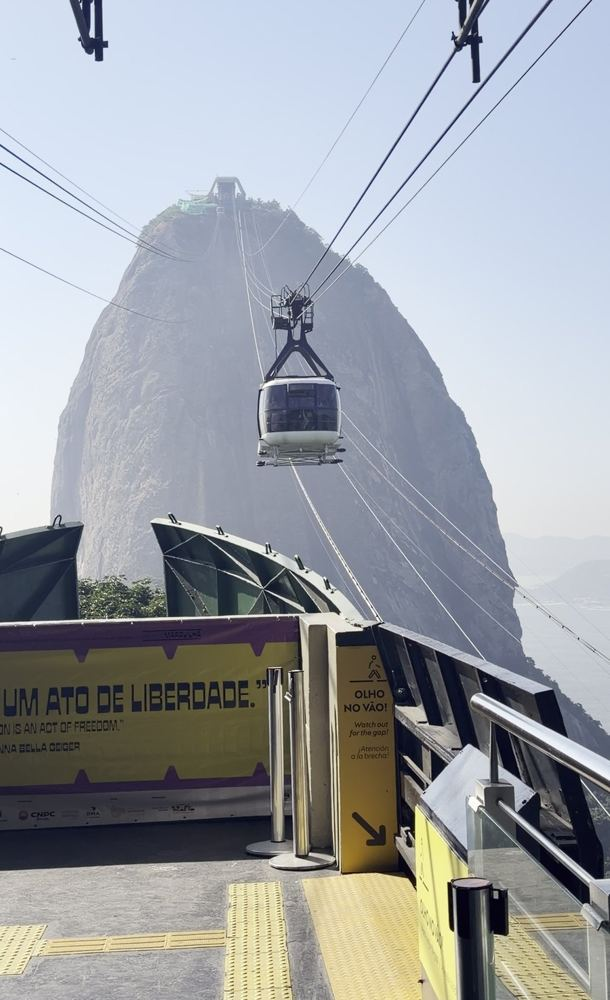
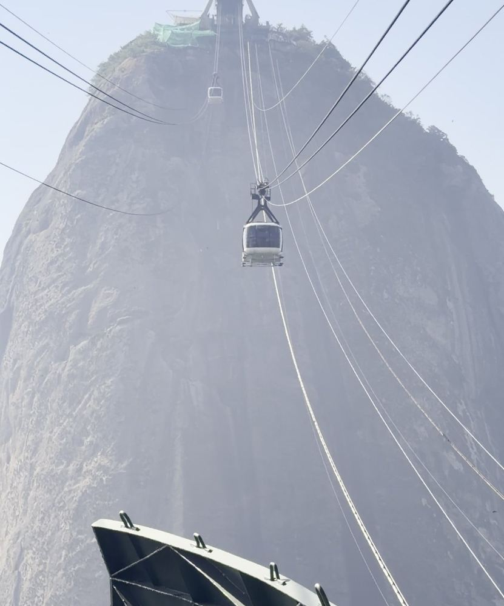
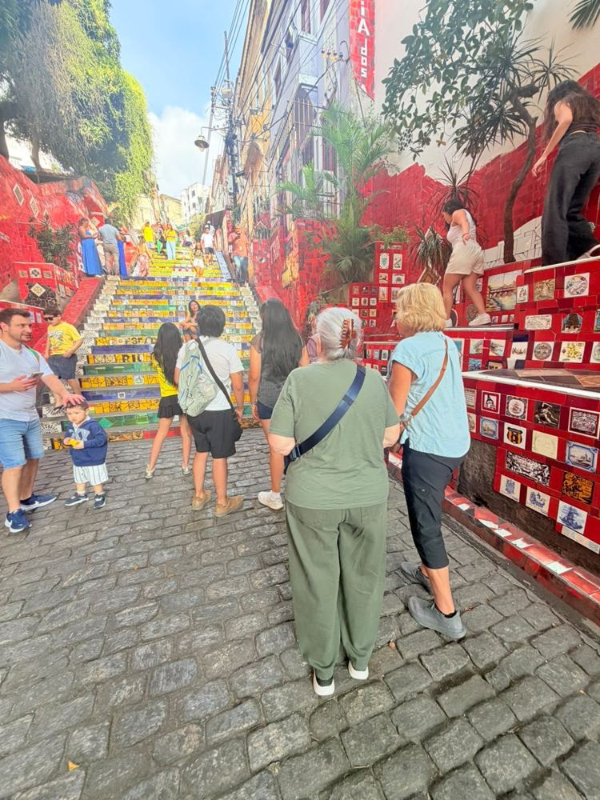

EXPERIÊNCIA RIO IA
Um dia
no Rio
Os ícones da cidade num só dia, com guia, transporte, ingressos e almoço incluídos.
Cristo RedentorPão de AçúcarSelarónDia inteiro
VALORA partir de R$ 450
Por adulto, com ingressos, transporte, guia e almoço. Crianças com desconto.
O roteiro
Cristo Redentor
Subida ao Corcovado para ver a cidade inteira aos pés do Cristo.

Pão de Açúcar
O bondinho mais famoso do Rio, com a Baía de Guanabara ao fundo.

Escadaria Selarón
Os degraus de azulejos do mundo todo, o cantinho mais colorido do Rio.
O que inclui
- Guia durante todo o passeio
- Transporte saindo da Zona Sul ou Centro (saída 7h45)
- Ingressos do Cristo Redentor e do Pão de Açúcar
- Almoço
- Paradas no Maracanã (por fora), Catedral Metropolitana e Sambódromo
O que levar
- Documento com foto
- Protetor solar
- Roupa confortável
Bom saber
Duração: cerca de 10 horas.
Não inclui: bebidas, sobremesas e a visita interna ao Maracanã.
Crianças: até 2 anos não pagam (no colo) · 3 e 4 anos pagam só o Pão de Açúcar · 5 a 10 anos, 50% de desconto.
Não inclui: bebidas, sobremesas e a visita interna ao Maracanã.
Crianças: até 2 anos não pagam (no colo) · 3 e 4 anos pagam só o Pão de Açúcar · 5 a 10 anos, 50% de desconto.
Como reservar
Reserva: confirmada com o pagamento de 100%, por Pix ou cartão (no cartão +5%). Confirmamos tudo pelo WhatsApp.
Reservar pelo WhatsApp